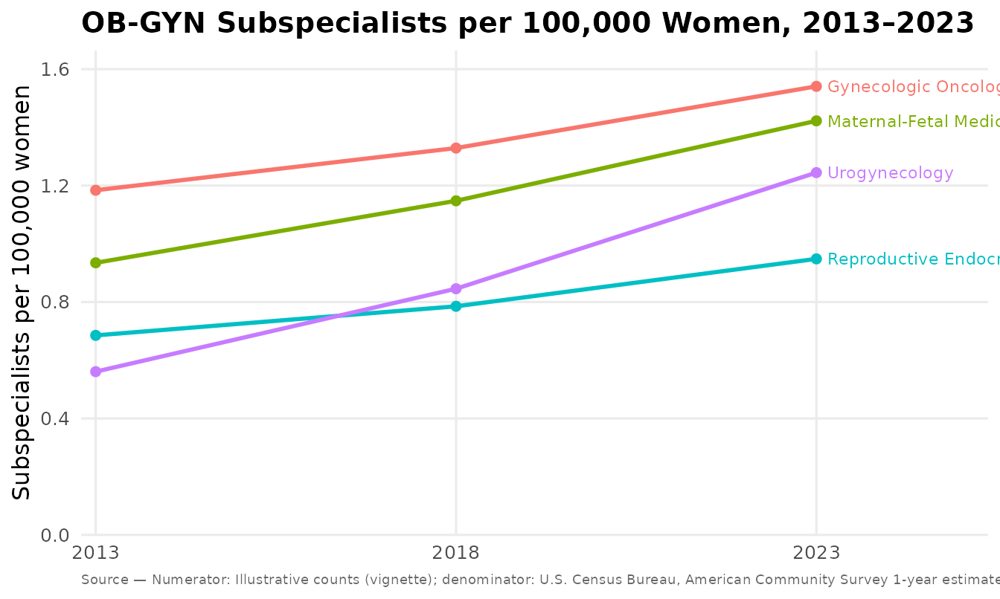

Subspecialist density per 100,000 women
Source:vignettes/subspecialist-density.Rmd
subspecialist-density.RmdWorkforce-density figures — subspecialists per 100,000 women — turn raw provider counts into an access metric a reader can compare across subspecialties and over time. This vignette walks the full path: counts + denominator → density → figure, with the provenance that keeps the picture honest.
Two figures share the same computation:
-
mysterycall_subspecialist_trend()— a multi-year line trend (one line per subspecialty), optionally with confidence bands. -
mysterycall_subspecialist_infographic()— a two-point (start → end) badge infographic.
The density is always derived from the inputs
(count / population * 100000), never typed, so a figure
cannot disagree with its own numbers.
1. The numerator: subspecialist counts
You supply the counts. A long data frame is the most flexible form — one row per subspecialty per year:
counts <- data.frame(
subspecialty = rep(c("Gynecologic Oncology", "Maternal-Fetal Medicine",
"Reproductive Endocrinology & Infertility",
"Urogynecology"), each = 3),
year = rep(c(2013, 2018, 2023), times = 4),
count = c(1900, 2200, 2600, # Gyn Onc
1500, 1900, 2400, # MFM
1100, 1300, 1600, # REI
900, 1400, 2100) # Urogyn
)
head(counts)
#> subspecialty year count
#> 1 Gynecologic Oncology 2013 1900
#> 2 Gynecologic Oncology 2018 2200
#> 3 Gynecologic Oncology 2023 2600
#> 4 Maternal-Fetal Medicine 2013 1500
#> 5 Maternal-Fetal Medicine 2018 1900
#> 6 Maternal-Fetal Medicine 2023 2400Wide data frames (a subspecialty column plus one column
per year) and matrices (subspecialty rows, year columns) are accepted
too.
2. The denominator: total female population
The denominator is the total female population for
each year. If you have a Census API key you can fetch it directly (ACS
table B01001, variable B01001_026E):
# Requires CENSUS_API_KEY and an internet connection.
fem_pop <- mysterycall_census_female_population(
years = c(2013, 2018, 2023),
survey = "acs5" # 5-year: available for every year, incl. 2020
)
fem_popThe ACS 1-year table was not released for 2020; when
you request survey = "acs1", fill_2020 chooses
whether to substitute the 5-year value (default), return
NA, or error.
For a reproducible vignette we just supply the values directly — a
year-named vector, an ordered vector, or a
data.frame(year, population) all work:
fem_pop <- c(`2013` = 160477237, `2018` = 165553033, `2023` = 168731234)These illustrative denominators are placeholders — swap in your own cited Census figures.
3. The trend figure
p <- mysterycall_subspecialist_trend(
counts,
population = fem_pop,
numerator_source = "Illustrative counts (vignette)",
accessed = "2026-08-02"
)
p
The returned object’s $data carries every computed
value, so nothing is hidden behind the plot:
head(p$data)
#> subspecialty year count population density
#> 1 Gynecologic Oncology 2013 1900 160477237 1.183969
#> 2 Gynecologic Oncology 2018 2200 165553033 1.328879
#> 3 Gynecologic Oncology 2023 2600 168731234 1.540912
#> 4 Maternal-Fetal Medicine 2013 1500 160477237 0.934712
#> 5 Maternal-Fetal Medicine 2018 1900 165553033 1.147668
#> 6 Maternal-Fetal Medicine 2023 2400 168731234 1.422380Confidence intervals
A per-100,000 rate is a count over a population, so it has an exact
Poisson confidence interval. Set conf_level to draw it as a
band and add density_low / density_high to
$data:
p_ci <- mysterycall_subspecialist_trend(counts, population = fem_pop,
conf_level = 0.95)
head(p_ci$data[, c("subspecialty", "year", "density",
"density_low", "density_high")])
#> subspecialty year density density_low density_high
#> 1 Gynecologic Oncology 2013 1.183969 1.1313244 1.2384302
#> 2 Gynecologic Oncology 2018 1.328879 1.2739243 1.3855952
#> 3 Gynecologic Oncology 2023 1.540912 1.4822458 1.6013051
#> 4 Maternal-Fetal Medicine 2013 0.934712 0.8880029 0.9832404
#> 5 Maternal-Fetal Medicine 2018 1.147668 1.0966384 1.2004603
#> 6 Maternal-Fetal Medicine 2023 1.422380 1.3660378 1.4804502A statistic, not just a line
trend_test fits a per-subspecialty log-linear regression
of count on year (offset log(population)) — a model of the
rate’s annual change — and attaches the tidy result. Each line’s end
label also gains the rate ratio per year and a significance star.
p_stat <- mysterycall_subspecialist_trend(counts, population = fem_pop,
trend_test = "quasipoisson")
attr(p_stat, "trend_test")[, c("subspecialty", "rr_per_year",
"conf_low", "conf_high", "p_value")]
#> subspecialty rr_per_year conf_low conf_high
#> 1 Gynecologic Oncology 1.026876 1.0026435 1.051693
#> 2 Maternal-Fetal Medicine 1.042955 1.0358176 1.050142
#> 3 Reproductive Endocrinology & Infertility 1.033326 0.9942208 1.073970
#> 4 Urogynecology 1.082605 1.0634631 1.102091
#> p_value
#> 1 0.045040196
#> 2 0.008180361
#> 3 0.058793510
#> 4 0.011260072Use "quasipoisson" when the counts are overdispersed;
the p-value then comes from a t-test on the overdispersion-scaled
standard error.
4. The two-point infographic
When you only need the endpoints, the infographic renders a badge per subspecialty with the percent change derived from the two densities:
ends <- subset(counts, year %in% c(2013, 2023))
d13 <- ends$count[ends$year == 2013] / fem_pop["2013"] * 1e5
d23 <- ends$count[ends$year == 2023] / fem_pop["2023"] * 1e5
mysterycall_subspecialist_infographic(
subspecialty = unique(ends$subspecialty),
start = as.numeric(d13),
end = as.numeric(d23)
)5. Provenance travels with the figure
Every figure records where its numbers came from. The record is attached to the object and printed on the figure as a source caption:
attr(p, "provenance")
#> mysterycall — figure provenance
#> ==================================
#> Metric: Subspecialists per 100,000 women
#> Computation: density = count / population * 100000
#> Numerator: Subspecialist counts by subspecialty and year (user-supplied)
#> num. source: Illustrative counts (vignette)
#> Denominator: Total female population by year
#> den. source: U.S. Census Bureau, American Community Survey 1-year estimates, table B01001 (B01001_026E, total female population)
#> Scale (per): 100000
#> Years: 2013–2023
#> Series: 4
#> Generated by: mysterycall::mysterycall_subspecialist_trend()
#> Pkg version: 1.6.3.9000
#> Data accessed: 2026-08-02
#> Created: 2026-09-06 14:10:50.268548Saving a figure also writes provenance sidecars next to the image — a
human-readable .provenance.txt and, when
jsonlite is installed, a machine-readable
.provenance.json (schema
mysterycall/provenance) carrying the record and the
per-point table:
mysterycall_subspecialist_trend(
counts, population = fem_pop,
numerator_source = "ABOG certified-diplomate counts, 2013-2023",
accessed = "2026-08-02",
output_path = "subspecialists_per_100k.png"
)
#> Saved: subspecialists_per_100k.png
#> Provenance: subspecialists_per_100k.provenance.txt
#> Provenance: subspecialists_per_100k.provenance.jsonThat trio — image, human-readable provenance, machine-readable provenance — is what makes the figure reproducible in an analysis pipeline.